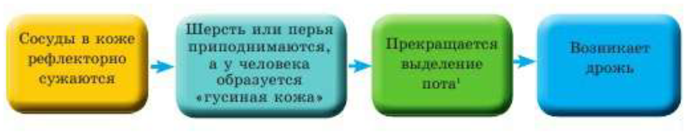
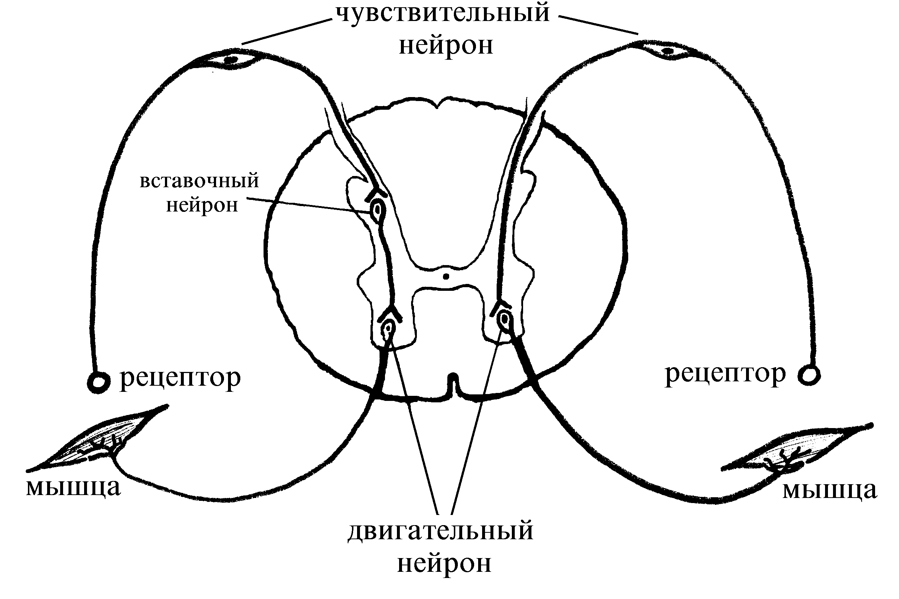

|
Рефлексы |
|
Полезные материалы по биологии: |
|
Рефлекс- это ответная реакция организма на раздражение с участием центральной нервной системы.
Рефлексы лежат в основе поведения животных, обладающих нервной системой со сформированным мозгом. Они есть уже у моллюсков и членистоногих.
Рефлексы помогают организмам выживать. Речь идет не только об ответных реакциях в виде движений в ту или иную сторону.
Например, при похолодании у теплокровных животных осуществляется ряд рефлекторных реакций, направленных на сохранение тепла:
 Все эти реакции необходимы, чтобы кожа отдавала меньше тепла в окружающую среду Рефлекторная дуга - это путь, по которому проходит нервный импульс при осуществлении рефлекса. Она включает пять отделов:
 |
|||
|
© Макыш Али |
|||